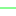

<!doctype html>
<html lang="en">
    <head>
        <meta charset="utf-8">
        <meta http-equiv="X-UA-Compatible" content="IE=edge">
        <meta name="viewport" content="initial-scale=1,user-scalable=no,maximum-scale=1,width=device-width">
        <meta name="mobile-web-app-capable" content="yes">
        <meta name="apple-mobile-web-app-capable" content="yes">
        <link rel="stylesheet" href="css/leaflet.css">
        <link rel="stylesheet" href="css/qgis2web.css"><link rel="stylesheet" href="css/fontawesome-all.min.css">
        <link rel="stylesheet" href="css/leaflet-search.css">
        <link rel="stylesheet" href="css/leaflet-control-geocoder.Geocoder.css">
        <link rel="stylesheet" href="css/leaflet-measure.css">
        <style>
        html, body, #map {
            width: 100%;
            height: 100%;
            padding: 0;
            margin: 0;
        }
        </style>
        <title></title>
    </head>
    <body>
        <div id="map">
        </div>
        <script src="js/qgis2web_expressions.js"></script>
        <script src="js/leaflet.js"></script>
        <script src="js/leaflet.rotatedMarker.js"></script>
        <script src="js/leaflet.pattern.js"></script>
        <script src="js/leaflet-hash.js"></script>
        <script src="js/Autolinker.min.js"></script>
        <script src="js/rbush.min.js"></script>
        <script src="js/labelgun.min.js"></script>
        <script src="js/labels.js"></script>
        <script src="js/leaflet-control-geocoder.Geocoder.js"></script>
        <script src="js/leaflet-measure.js"></script>
        <script src="js/leaflet-search.js"></script>
        <script src="data/SA_CNCs_3.js"></script>
        <script src="data/MVLineRoutesDISS_02102022_4.js"></script>
        <script>
        var highlightLayer;
        function highlightFeature(e) {
            highlightLayer = e.target;

            if (e.target.feature.geometry.type === 'LineString') {
              highlightLayer.setStyle({
                color: '#ffff00',
              });
            } else {
              highlightLayer.setStyle({
                fillColor: '#ffff00',
                fillOpacity: 1
              });
            }
            highlightLayer.openPopup();
        }
        var map = L.map('map', {
            zoomControl:true, maxZoom:28, minZoom:1
        }).fitBounds([[-28.833295632839754,22.27681843256329],[-21.43585509029916,35.57359084941829]]);
        var hash = new L.Hash(map);
        map.attributionControl.setPrefix('<a href="https://github.com/tomchadwin/qgis2web" target="_blank">qgis2web</a> &middot; <a href="https://leafletjs.com" title="A JS library for interactive maps">Leaflet</a> &middot; <a href="https://qgis.org">QGIS</a>');
        var autolinker = new Autolinker({truncate: {length: 30, location: 'smart'}});
        var measureControl = new L.Control.Measure({
            position: 'topleft',
            primaryLengthUnit: 'meters',
            secondaryLengthUnit: 'kilometers',
            primaryAreaUnit: 'sqmeters',
            secondaryAreaUnit: 'hectares'
        });
        measureControl.addTo(map);
        document.getElementsByClassName('leaflet-control-measure-toggle')[0]
        .innerHTML = '';
        document.getElementsByClassName('leaflet-control-measure-toggle')[0]
        .className += ' fas fa-ruler';
        var bounds_group = new L.featureGroup([]);
        function setBounds() {
        }
        map.createPane('pane_GoogleSatellite_0');
        map.getPane('pane_GoogleSatellite_0').style.zIndex = 400;
        var layer_GoogleSatellite_0 = L.tileLayer('https://mt1.google.com/vt/lyrs=s&x={x}&y={y}&z={z}', {
            pane: 'pane_GoogleSatellite_0',
            opacity: 1.0,
            attribution: '',
            minZoom: 1,
            maxZoom: 28,
            minNativeZoom: 0,
            maxNativeZoom: 22
        });
        layer_GoogleSatellite_0;
        map.addLayer(layer_GoogleSatellite_0);
        map.createPane('pane_GoogleMaps_1');
        map.getPane('pane_GoogleMaps_1').style.zIndex = 401;
        var layer_GoogleMaps_1 = L.tileLayer('https://mt1.google.com/vt/lyrs=m&x={x}&y={y}&z={z}', {
            pane: 'pane_GoogleMaps_1',
            opacity: 1.0,
            attribution: '',
            minZoom: 1,
            maxZoom: 28,
            minNativeZoom: 0,
            maxNativeZoom: 22
        });
        layer_GoogleMaps_1;
        map.addLayer(layer_GoogleMaps_1);
        map.createPane('pane_OpenStreetMap_2');
        map.getPane('pane_OpenStreetMap_2').style.zIndex = 402;
        var layer_OpenStreetMap_2 = L.tileLayer('https://tile.openstreetmap.org/{z}/{x}/{y}.png', {
            pane: 'pane_OpenStreetMap_2',
            opacity: 1.0,
            attribution: '',
            minZoom: 1,
            maxZoom: 28,
            minNativeZoom: 0,
            maxNativeZoom: 19
        });
        layer_OpenStreetMap_2;
        map.addLayer(layer_OpenStreetMap_2);
        function pop_SA_CNCs_3(feature, layer) {
            layer.on({
                mouseout: function(e) {
                    for (i in e.target._eventParents) {
                        e.target._eventParents[i].resetStyle(e.target);
                    }
                    if (typeof layer.closePopup == 'function') {
                        layer.closePopup();
                    } else {
                        layer.eachLayer(function(feature){
                            feature.closePopup()
                        });
                    }
                },
                mouseover: highlightFeature,
            });
            var popupContent = '<table>\
                    <tr>\
                        <td colspan="2">' + (feature.properties['busines_id'] !== null ? autolinker.link(feature.properties['busines_id'].toLocaleString()) : '') + '</td>\
                    </tr>\
                    <tr>\
                        <td colspan="2">' + (feature.properties['organis_id'] !== null ? autolinker.link(feature.properties['organis_id'].toLocaleString()) : '') + '</td>\
                    </tr>\
                    <tr>\
                        <th scope="row">descriptio</th>\
                        <td>' + (feature.properties['descriptio'] !== null ? autolinker.link(feature.properties['descriptio'].toLocaleString()) : '') + '</td>\
                    </tr>\
                    <tr>\
                        <td colspan="2">' + (feature.properties['audit_trail'] !== null ? autolinker.link(feature.properties['audit_trail'].toLocaleString()) : '') + '</td>\
                    </tr>\
                    <tr>\
                        <td colspan="2">' + (feature.properties['date_create'] !== null ? autolinker.link(feature.properties['date_create'].toLocaleString()) : '') + '</td>\
                    </tr>\
                    <tr>\
                        <td colspan="2">' + (feature.properties['date_update'] !== null ? autolinker.link(feature.properties['date_update'].toLocaleString()) : '') + '</td>\
                    </tr>\
                    <tr>\
                        <td colspan="2">' + (feature.properties['parent__id'] !== null ? autolinker.link(feature.properties['parent__id'].toLocaleString()) : '') + '</td>\
                    </tr>\
                    <tr>\
                        <td colspan="2">' + (feature.properties['parent_desc'] !== null ? autolinker.link(feature.properties['parent_desc'].toLocaleString()) : '') + '</td>\
                    </tr>\
                </table>';
            layer.bindPopup(popupContent, {maxHeight: 400});
        }

        function style_SA_CNCs_3_0() {
            return {
                pane: 'pane_SA_CNCs_3',
                opacity: 1,
                color: 'rgba(53,121,177,1.0)',
                dashArray: '',
                lineCap: 'square',
                lineJoin: 'bevel',
                weight: 1.0,
                fillOpacity: 0,
                interactive: false,
            }
        }
        map.createPane('pane_SA_CNCs_3');
        map.getPane('pane_SA_CNCs_3').style.zIndex = 403;
        map.getPane('pane_SA_CNCs_3').style['mix-blend-mode'] = 'normal';
        var layer_SA_CNCs_3 = new L.geoJson(json_SA_CNCs_3, {
            attribution: '',
            interactive: false,
            dataVar: 'json_SA_CNCs_3',
            layerName: 'layer_SA_CNCs_3',
            pane: 'pane_SA_CNCs_3',
            onEachFeature: pop_SA_CNCs_3,
            style: style_SA_CNCs_3_0,
        });
        bounds_group.addLayer(layer_SA_CNCs_3);
        map.addLayer(layer_SA_CNCs_3);
        function pop_MVLineRoutesDISS_02102022_4(feature, layer) {
            layer.on({
                mouseout: function(e) {
                    for (i in e.target._eventParents) {
                        e.target._eventParents[i].resetStyle(e.target);
                    }
                    if (typeof layer.closePopup == 'function') {
                        layer.closePopup();
                    } else {
                        layer.eachLayer(function(feature){
                            feature.closePopup()
                        });
                    }
                },
                mouseover: highlightFeature,
            });
            var popupContent = '<table>\
                    <tr>\
                        <th scope="row">Feeder Name</th>\
                        <td>' + (feature.properties['OHL_DESCRI'] !== null ? autolinker.link(feature.properties['OHL_DESCRI'].toLocaleString()) : '') + '</td>\
                    </tr>\
                    <tr>\
                        <th scope="row">Status</th>\
                        <td>' + (feature.properties['STATUS'] !== null ? autolinker.link(feature.properties['STATUS'].toLocaleString()) : '') + '</td>\
                    </tr>\
                    <tr>\
                        <th scope="row">Type</th>\
                        <td>' + (feature.properties['TYPE'] !== null ? autolinker.link(feature.properties['TYPE'].toLocaleString()) : '') + '</td>\
                    </tr>\
                    <tr>\
                        <th scope="row">Network Status With Reliability</th>\
                        <td>' + (feature.properties['N S W Rel'] !== null ? autolinker.link(feature.properties['N S W Rel'].toLocaleString()) : '') + '</td>\
                    </tr>\
                    <tr>\
                        <th scope="row">Network Status Without Reliability</th>\
                        <td>' + (feature.properties['N S WO R'] !== null ? autolinker.link(feature.properties['N S WO R'].toLocaleString()) : '') + '</td>\
                    </tr>\
                </table>';
            layer.bindPopup(popupContent, {maxHeight: 400});
        }

        function style_MVLineRoutesDISS_02102022_4_0(feature) {
            switch(String(feature.properties['N S W Rel'])) {
                case 'Green':
                    return {
                pane: 'pane_MVLineRoutesDISS_02102022_4',
                opacity: 1,
                color: 'rgba(15,248,62,1.0)',
                dashArray: '',
                lineCap: 'square',
                lineJoin: 'bevel',
                weight: 1.0,
                fillOpacity: 0,
                interactive: true,
            }
                    break;
                case 'Orange':
                    return {
                pane: 'pane_MVLineRoutesDISS_02102022_4',
                opacity: 1,
                color: 'rgba(244,220,4,1.0)',
                dashArray: '',
                lineCap: 'square',
                lineJoin: 'bevel',
                weight: 1.0,
                fillOpacity: 0,
                interactive: true,
            }
                    break;
                case 'Red':
                    return {
                pane: 'pane_MVLineRoutesDISS_02102022_4',
                opacity: 1,
                color: 'rgba(238,58,8,1.0)',
                dashArray: '',
                lineCap: 'square',
                lineJoin: 'bevel',
                weight: 1.0,
                fillOpacity: 0,
                interactive: true,
            }
                    break;
                default:
                    return {
                pane: 'pane_MVLineRoutesDISS_02102022_4',
                opacity: 1,
                color: 'rgba(14,248,30,1.0)',
                dashArray: '',
                lineCap: 'square',
                lineJoin: 'bevel',
                weight: 1.0,
                fillOpacity: 0,
                interactive: true,
            }
                    break;
            }
        }
        map.createPane('pane_MVLineRoutesDISS_02102022_4');
        map.getPane('pane_MVLineRoutesDISS_02102022_4').style.zIndex = 404;
        map.getPane('pane_MVLineRoutesDISS_02102022_4').style['mix-blend-mode'] = 'normal';
        var layer_MVLineRoutesDISS_02102022_4 = new L.geoJson(json_MVLineRoutesDISS_02102022_4, {
            attribution: '',
            interactive: true,
            dataVar: 'json_MVLineRoutesDISS_02102022_4',
            layerName: 'layer_MVLineRoutesDISS_02102022_4',
            pane: 'pane_MVLineRoutesDISS_02102022_4',
            onEachFeature: pop_MVLineRoutesDISS_02102022_4,
            style: style_MVLineRoutesDISS_02102022_4_0,
        });
        bounds_group.addLayer(layer_MVLineRoutesDISS_02102022_4);
        map.addLayer(layer_MVLineRoutesDISS_02102022_4);
        var osmGeocoder = new L.Control.Geocoder({
            collapsed: true,
            position: 'topleft',
            text: 'Search',
            title: 'Testing'
        }).addTo(map);
        document.getElementsByClassName('leaflet-control-geocoder-icon')[0]
        .className += ' fa fa-search';
        document.getElementsByClassName('leaflet-control-geocoder-icon')[0]
        .title += 'Search for a place';
        var baseMaps = {};
        L.control.layers(baseMaps,{'MVLine RoutesDISS_02102022<br /><table><tr><td style="text-align: center;"></td><td>Green</td></tr><tr><td style="text-align: center;"></td><td>Orange</td></tr><tr><td style="text-align: center;"></td><td>Red</td></tr><tr><td style="text-align: center;"></td><td></td></tr></table>': layer_MVLineRoutesDISS_02102022_4,' SA_CNCs': layer_SA_CNCs_3,"OpenStreetMap": layer_OpenStreetMap_2,"Google Maps": layer_GoogleMaps_1,"Google Satellite": layer_GoogleSatellite_0,},{collapsed:false}).addTo(map);
        setBounds();
        var i = 0;
        layer_SA_CNCs_3.eachLayer(function(layer) {
            var context = {
                feature: layer.feature,
                variables: {}
            };
            layer.bindTooltip((layer.feature.properties['descriptio'] !== null?String('<div style="color: #000000; font-size: 10pt; font-family: \'MS Shell Dlg 2\', sans-serif;">' + layer.feature.properties['descriptio']) + '</div>':''), {permanent: true, offset: [-0, -16], className: 'css_SA_CNCs_3'});
            labels.push(layer);
            totalMarkers += 1;
              layer.added = true;
              addLabel(layer, i);
              i++;
        });
        map.addControl(new L.Control.Search({
            layer: layer_MVLineRoutesDISS_02102022_4,
            initial: false,
            hideMarkerOnCollapse: true,
            propertyName: 'N S WO R'}));
        document.getElementsByClassName('search-button')[0].className +=
         ' fa fa-binoculars';
        resetLabels([layer_SA_CNCs_3,layer_MVLineRoutesDISS_02102022_4]);
        map.on("zoomend", function(){
            resetLabels([layer_SA_CNCs_3,layer_MVLineRoutesDISS_02102022_4]);
        });
        map.on("layeradd", function(){
            resetLabels([layer_SA_CNCs_3,layer_MVLineRoutesDISS_02102022_4]);
        });
        map.on("layerremove", function(){
            resetLabels([layer_SA_CNCs_3,layer_MVLineRoutesDISS_02102022_4]);
        });
        </script>
    </body>
</html>
